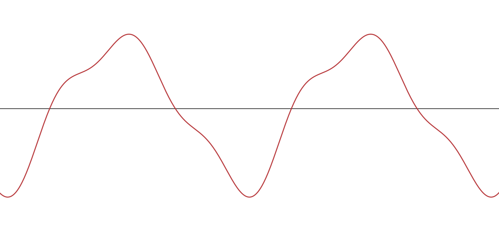
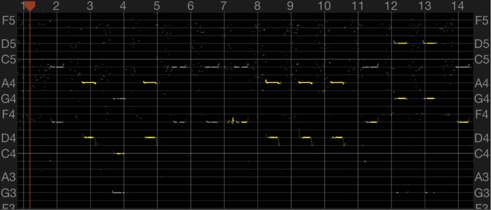
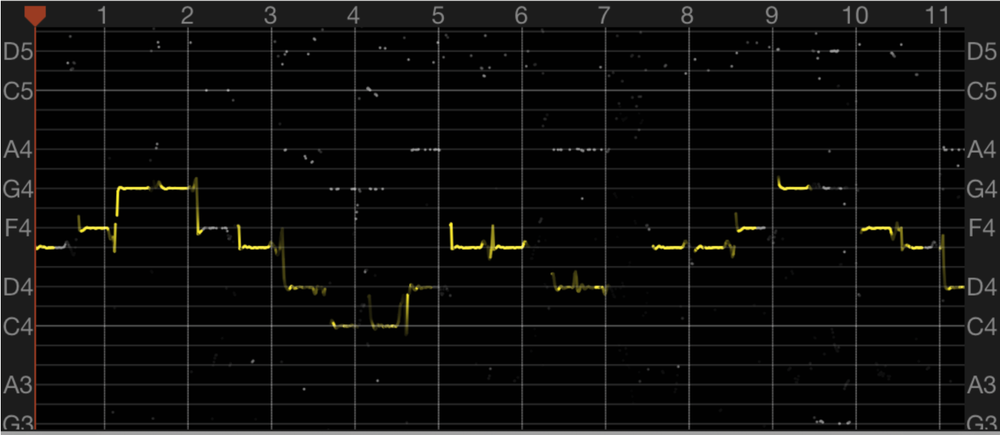
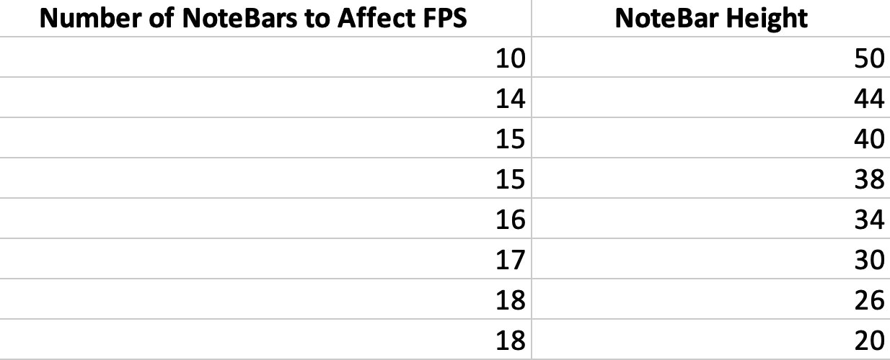

Results of Design
Waveforms
While we did gather scope data for our direct digital synthesis wave, we weren’t able to capture a screenshot of the oscilloscope used. So, below is the ideal, continuous waveform which we produced with our direct digital synthesis.

Ideal sinewave produced with direct digital synthesis
Accuracy
While we didn’t get oscilloscope data, we did capture frequency data when playing certain songs using an iPhone app called Singscope. This helped us debug some of our results as our synth originally played an extra 5th note that sounded awkward. I personally wasn’t able to tell until I captured the note frequencies on the graph.

Musical frequency spectrum produced by our synth with unintentional 5th notes
As you can see, the graph above has very defined white and yellow lines. This wasn’t ideal for us because we wanted a very accurate, single note to play each time a button was pressed. After some debugging, we were able to achieve the following frequency mapping, which demonstrates significantly more accurate pitch control on our game. Each note is within 0.5Hz of the true note frequency, which is plenty accurate and indistinguishable to the human ear.

Musical frequency spectrum produced by our synth
Speed of Execution
Our game did run very efficiently at a consistent 32.5 frames per second. We were able to achieve this consistent frame rate by utilizing both cores and forcing fast execution times to rest between cycles, otherwise the game speed would look very funky. We decided to stress test our game using a controlled generation of NoteBars to determine what amount of NoteBars on the screen would result in the frame rate dropping below 32.5 frames per second. It turns out that this number was dependent on the height of each NoteBar, which is a variable that changes with game difficulty. Below, we have data which shows the number of NoteBars on a screen that would cause the game to drop below 32.5 frames per second for a given NoteBar height.

Number of NoteBars that affects frame rate
Besides graphics, there was no lag perceivable to a human between the time after a button was pressed and a note was both selected on the screen and played auditorily.
Safety and Usability
The last way in which we tested our project’s results was through user trial and error. We tested a large variability of different game sequences, some of which can be seen below:
- Start game → Pause → Restart
- Start game → Pause → Resume → Pause → Restart
- Start game → Pause → Resume → Pause → Main Menu
- Select Different Song → Change Difficulty → Select Different Song → Start Game
- Change Difficulty → Select Different Song → Start Game → Quit → Start Game
etc.
Surprisingly, we were able to achieve all intended behaviors within a few tries. We never faced any issues after this extensive testing whenever we or others played the game. When other class members played our game, we had to explain how the red and green center buttons allowed you to control the menu options. However, once they got the hang of it, they found the interface to be very intuitive.
We believe we were able to achieve intended behaviors almost immediately due to the safety mechanism we implemented. It required that all major global variables that indicate screen and selection state be controlled from within the main core 0 thread. Doing this ensured whenever a user changed the screen’s state, it would do so in the main thread.
Also, the use of simple arcade buttons provided some base level of safety as well because it was impossible for a user to input NULL or other undesirable types into our program.